Quando você começa a estudar programação, surgem duas questões extremamente importantes, que são os chamados paradigmas de programação. Neste curso, iniciou-se a abordagem de um dos mais clássicos paradigmas, o estruturado, porém, por uma necessidade maior de lógica, estruturação de dados, fluxo de informações e, com grande importância, necessidade de mercado, será iniciado agora o estudo do paradigma mais importante na realidade de todo o desenvolvedor atualmente, o paradigma orientado a objetos.
Mas, afinal, o que é esse paradigma e para que ele serve?
Primeiramente, relembre como você aprendeu a programar até este momento. Na programação estruturada, você trabalhou principalmente utilizando uma única rotina e quebrando isso em sub-rotinas: o programa é lido de cima para baixo, da linha 1 até a última, linha a linha, porém o fluxo dos programas são sempre os mesmos.
É possível quebrar o paradigma estruturado em três tipos de estruturas:
Sequências
São os comandos básicos que serão executados.
Condições
São as sequências de comandos que só serão executados quando uma condição específica for verdadeira ou falsa (se, senão, escolha etc.).
Repetições
São as sequências de comandos que acontecerão em loop até que uma condição específica seja atingida (para, enquanto etc.).
Este paradigma já deve estar bem compreendido, pois, no decorrer de sua aprendizagem, foi com ele que você aprendeu e desenvolveu seus primeiros passos em lógica de programação. Apenas para exemplificar visualmente, analise a estrutura a seguir:
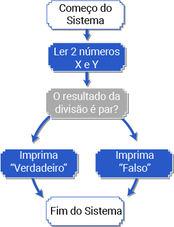
Exemplo de um sistema que aplica o paradigma estruturado
Fonte: Senac EAD (2022)
A imagem inicia com uma elipse, dentro da qual consta o texto “Começo do sistema”. Uma seta leva para um retângulo abaixo com o texto “Ler 2 números – X e Y”; outra leva para um losango à direita com o texto “O resultado da divisão é par?”. Aqui, há duas setas: uma leva para cima, até um retângulo com o texto “Imprima Verdadeiro”; e a outra leva para baixo, até um retângulo com o texto “Imprima Falso”. Agora, há mais duas setas: uma leva para cima e a outra, para baixo, levando a uma elipse com o texto “Fim do sistema”.
Com relação à orientação a objetos, é preciso saber que ela surgiu como uma alternativa para mudar a forma de entendimento de algoritmos e de construção de sistemas do paradigma estruturado. O surgimento dos estudos da orientação a objetos veio em 1967, pelo programador Alan Kay, que cunhou o termo programação orientada a objetos, embora esse termo tenha começado a ser utilizado de fato por grandes empresas na década de 1990.
É preciso pensar que a orientação a objetos tem como propósito aproximar a lógica de programação ao mundo real, o qual é organizado com a criação de objetos, e esses objetos têm diversas características e funções que os diferenciam uns dos outros. Essa definição é chave para entender os primeiros passos de paradigma.
Este estudo sobre paradigma começará com dois conceitos importantíssimos: classes e objetos. Dominando esses dois conceitos, será possível compreender que toda a orientação a objetos é construída acima deles.
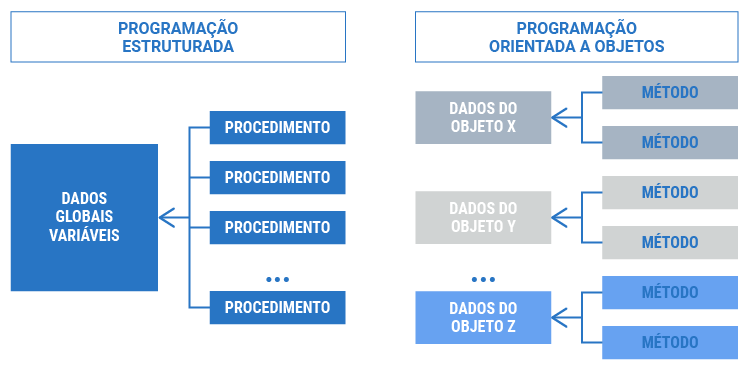
Programação estruturada versus programação orientada a objetos
Fonte: Senac EAD (2022)
Na imagem constam duas colunas. Na primeira coluna, logo acima, está o texto “Programação estruturada”; abaixo, há um quadrado com o texto “Dados globais – Variáveis”, ligado a esse quadrado estão quatro setas que levam a quatro retângulos, um abaixo do outro, e cada retângulo contém o texto “Procedimento”. Na segunda coluna, logo acima, está o texto “Programação orientada a objetos”; abaixo, consta o primeiro retângulo com o texto “Dados do objeto X”, e, ao lado direito, estão dois retângulos, um abaixo do outro, cada um com o texto “Método”. Abaixo disso está o segundo retângulo com o texto “Dados do objeto Y”, e, ao lado direito, estão dois retângulos, um abaixo do outro, cada um com o texto “Método”. Por fim, abaixo está o terceiro retângulo com o texto “Dados do objeto Z”, e, ao lado direito, dois retângulos, um abaixo do outro, cada um com o texto “Método”.
Inicialmente, neste conceito, é preciso entender que as classes “conversam” diretamente com objetos, e assim são formados os primeiros conceitos dessa linguagem.
Confira algumas características de uma classe:
A classe é a descrição de um tipo de objeto. Que tal analisar isso de uma maneira mais visual, começando com a classe Aluno?
| ALUNO |
|---|
| Nome do aluno |
| Número de matrícula |
| CPF |
| Data de nascimento |
| Curso |
Atributos da classe
Fonte Senac EAD (2022)
Nesse quadro, note que há o nome da classe e as características dela.
Como se sabe, essas características são chamadas de atributos. Então, ainda é preciso definir as ações, ou melhor, os métodos dessa classe.
| ALUNO |
|---|
| Estudar |
| Assistir à aula |
| Enviar atividades |
Métodos da classe
Fonte Senac EAD (2022)
No quadro, agora constam o nome da classe e as ações dela.
Você está finalizando a construção da sua primeira classe. Que tal juntar agora os atributos e os métodos?
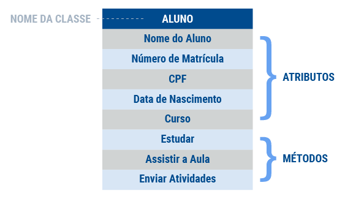
Exemplo de uma classe com atributos e métodos
Fonte Senac EAD (2022)
Na imagem consta uma tabela de apenas uma coluna e dez linhas. Na primeira linha está a palavra “Aluno”; abaixo, estão as palavras “Nome do aluno”, “Número de matrícula”, “CPF”, “Data de nascimento” e “Curso”. Abaixo disso está uma linha sem conteúdo textual, separando atributos e métodos. Nas últimas três linhas estão as palavras “Estudar”, “Assistir à aula” e “Enviar atividades”. Ao lado da palavra “Aluno”, no topo da tabela, consta uma seta apontando para direita e para o texto “Nome da classe”; abaixo, há uma chave apontando para o texto “Atributos”, e, por fim, abaixo, há uma chave apontando para o texto “Métodos”.
Portanto, o que é uma classe? É um molde, um modelo, um conjunto de informações e dados que formarão, no futuro, vários objetos. Essa definição é extremamente importante, pois se tem toda a estrutura do aluno.
Claro que aluno é algo muito mais próximo do mundo real. Porém, quando se fala em “mundo real” na orientação a objetos não se está necessariamente falando de objetos concretos ou algo tão na superfície assim. Reflita se, no desenvolvimento de um sistema para uma faculdade, fosse pedido a você que criasse um sistema no qual podem ser cadastrados alunos, professores, demais funcionários e também as matérias (ou cadeiras) que estarão no sistema.
Uma matéria não é algo palpável, correto? Mesmo assim, é possível aproximá-la do mundo real e criar uma classe para que se possa desenvolvê-la com alguns atributos.
| MATÉRIA |
|---|
| Número máximo de alunos |
| Professores cadastrados |
| Turno |
| carga horária |
Classe matérias
Fonte Senac EAD (2022)
Note que a ideia principal é conseguir criar uma classe por meio de qualquer informação que se tem e com isso desenvolver o sistema necessário.
Como você já deve ter aprendido quando estudou banco de dados, as classes “conversarão” umas com as outras. Um Aluno terá consigo uma ou várias Matérias. Um Professor pode ensinar em várias ou uma matéria, e assim por diante. Quando as classes estão “conversando” entre si, é um sinal de que o desenvolvimento do sistema está sendo encaminhado com sucesso.
Considere agora uma classe mais rotineira, como um carro.
Esse passo agora é importante, pois você iniciará um processo já conhecido, que é a abstração, ou seja, construir uma classe pensando desde o início no papel dela dentro do sistema. Imagine um sistema para uma concessionária de carros, no qual será necessário cadastrar os carros que estão à venda.
Quais serão os atributos desse carro? Pense nas características que podem constituir um carro e nos dados que seriam importantes para cadastrar o veículo dentro de um sistema.
| CARRO |
|---|
| Modelo |
| Marca |
| Preço |
| Ano |
| Combustível |
| Acelerar |
| Frear |
| Ligar |
| Abrir porta-malas |
Classe carro
Fonte Senac EAD (2022)
A classe Carro está pronta e agora se pode pensar em criar objetos a partir dela. Já se tem os atributos e métodos definidos, portanto o “molde” já está pronto. É bem possível que apenas com essas informações você já consiga pensar em vários carros diferentes, não é mesmo? E é a partir dessas diferenciações que o estudo sobre objetos será iniciado.
Como já comentado, esse processo de abstração das classes é muito importante para que se tenham bem definidos os atributos e os métodos e facilite o desenvolvimento do processo quando chegar a hora de colocar tudo isso dentro dos códigos.
Como um desafio para que você possa praticar, observe as imagens a seguir e defina, visualmente, os atributos e métodos, formando classes similares ao que foi feito com Aluno. Use tabelas no editor de texto ou desenhe à mão quadros representando as classes.
Computadores
Fonte: Imagens e Moldes (s.d.)
A imagem mostra três diferentes tipos de computadores: um mais simples, para uso diário, ao lado um computador gamer, que é voltado para jogos e alta performance, com luzes de LED, teclado e mouse iluminados e, à frente desses dois, um notebook.
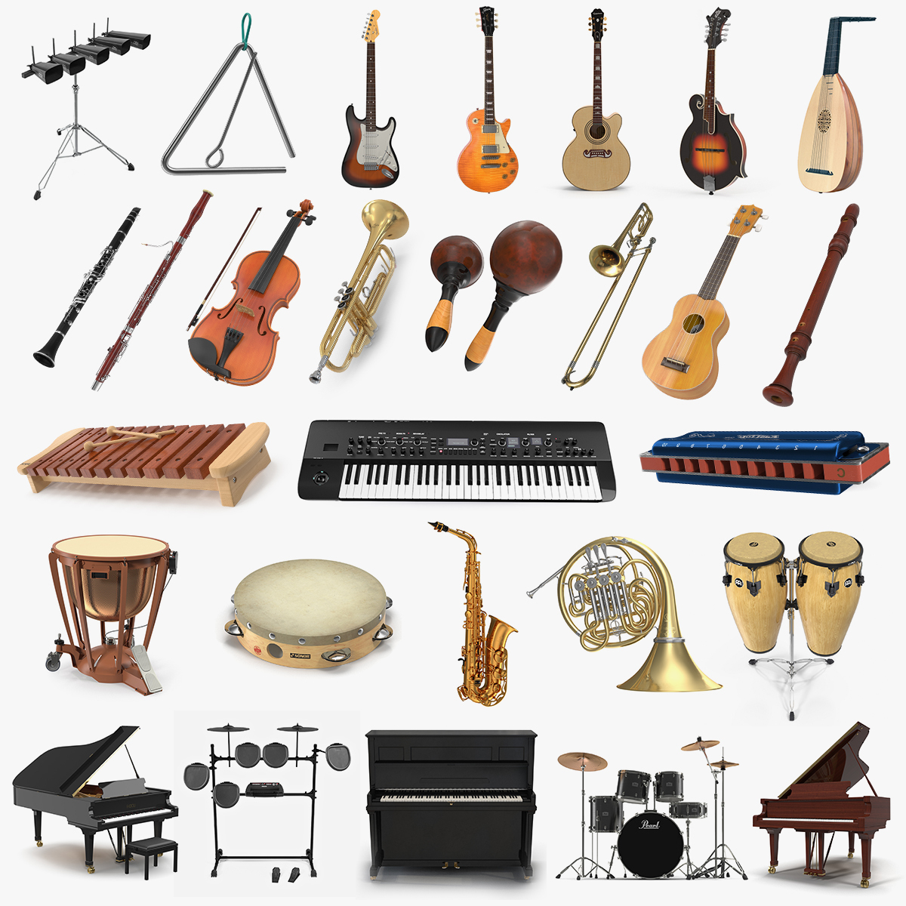
Instrumentos musicais
Fonte: TurboSquid (c2022)
A imagem mostra diversos instrumentos musicais diferentes. São quatro linhas de instrumentos, contendo saxofone, trombones, trompetes, violinos, pandeiros, violões, guitarras, baixos, tamborim, teclado, bateria, pianos.
O processo mais abstrato da orientação a objetos já está bem definido como sendo as classes. Agora, será iniciado outro processo, que é o de tornar essas classes em objetos, aproximando-as do mundo real. Todos os objetos usarão os atributos e métodos da classe quando forem criados.
É importante definir algumas propriedades desses objetos para entender melhor. Três pilares devem ser considerados quando um objeto novo é criado. São eles:
Estado
Representado pelos valores dos atributos.
Estado
Representado pelo conjunto de métodos.
Estado
Um objeto é único, mesmo que o seu estado seja idêntico ao de outro.
Esses pilares parecem ser algo tão abstrato quanto as classes, não é mesmo? Para demonstrá-los melhor, observe o exemplo a seguir:
Exemplo de objeto e seu estado
Fonte: Senac EAD (2022)
A imagem mostra uma lâmpada à esquerda e duas setas saindo dela. A seta acima aponta para o texto “Acender” e a seta abaixo aponta para o texto “Apagar”.
Os estados dos objetos “conversam” diretamente com os atributos que são definidos nas classes.
Exemplo de objeto e comportamento
Fonte: Senac EAD (2022)
A imagem mostra uma lâmpada à esquerda e duas setas saindo dela. A seta acima aponta para o texto “Acesa” e a seta abaixo aponta para o texto “Apagada”.
Os comportamentos dos objetos “conversam” diretamente com os métodos que são definidos nas classes.
Exemplo de objeto e identidade
Fonte: Senac EAD (2022)
A imagem mostra três lâmpadas coloridas. Da esquerda para a direita, as lâmpadas têm as cores amarela, azul e verde.
Agora, tendo já as definições de atributos e os métodos, o que sobra para a identidade?
É neste momento que se entra em um dos conceitos mais importantes quando se fala de orientação a objetos: a instanciação.
Imagine o seguinte cenário: você recentemente comprou uma televisão e decidiu modelar essa televisão usando a orientação a objetos. A sua televisão tem todas as características que você estava procurando: tela de 42 polegadas e widescreen, é preta e tem botões nas laterais. Estes são os atributos. A televisão também desempenha as ações necessárias para que você tenha feito a compra dela, ações essas que representam as funções básicas de ligar, desligar, trocar canais, mudar brilho, e também funções mais complexas, como acessar a Internet e os canais de streaming. Estes são os métodos. Tranquilamente, é possível afirmar que essa é a identidade da sua televisão recentemente comprada e ela é um objeto.
Sua televisão é um objeto seu, mas, com certeza, na loja em que você comprou existiam várias outras, similares ou não, sem acesso à Internet, mas na cor branca, de polegadas menores ou maiores, com botões frontais etc. Claro que essa televisão é sua e de mais ninguém, porém esse objeto específico é seu. Esse objeto chama-se instância de classe, e que classe é essa? Televisão, é claro!
Para compreender melhor esse exemplo, observe a figura a seguir:
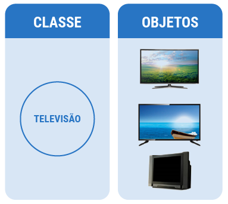
Demonstração de instâncias de objetos
Fonte: Senac EAD (2022)
Na imagem constam duas colunas. Na coluna da esquerda, acima, está o texto “Classe”; abaixo há um círculo com o texto “Televisão”. Na coluna da direita, acima, está o texto “Objetos”; abaixo estão três televisores, um com tela de LED, abaixo deste um com tela LCD e abaixo um televisor de tubo (CRT).
Note que, como citado na definição de classe, a classe é um molde e os objetos é o que se cria a partir desse molde.
Todo esse processo de criar algo a partir de um molde é o que se chama de instância de classe e isso gera as diferentes identidades de objetos. Então, retome agora a classe Aluno para criar algumas instâncias a partir dela:
Instância 1
| ALUNO |
|---|
| João Silva |
| 1111111 |
| 111.222.333-44 |
| 12/02/1993 |
| Técnico em Desenvolvimento de Sistemas |
Instância 2
| ALUNO |
|---|
| Bruno Costa |
| 2222222 |
| 555.666.777-88 |
| 17/10/1999 |
| Técnico em Desenvolvimento de Sistemas |
Instância 3
| ALUNO |
|---|
| Leonardo Rosa |
| 3333333 |
| 999.000.123-45 |
| 12/02/1993 |
| Técnico em Desenvolvimento de Sistemas |
Criar instâncias
Fonte: Senac EAD (2022)
Observe que as três instâncias são objetos diferentes, porém alguns atributos têm os mesmos valores. As televisões podem ser similares (ou até mesmo idênticas), mas os alunos são diferentes, com nomes, números de matrículas e de CPF, sendo valores únicos. Em uma análise mais profunda, pode-se notar que os alunos João e Leonardo têm a mesma data de nascimento e os três alunos estão no mesmo curso, mas ainda assim são objetos diferentes, porque são instâncias da classe Aluno.
Utilizando as mesmas imagens e classes apresentadas no desafio anterior, crie agora diferentes instâncias de objetos: no mínimo três de cada. Use diferentes valores para os atributos, a fim de praticar bem a diferença entre os objetos.
Os principais pilares da orientação a objetos já foram definidos: classes e objetos. Mas ainda existem outras quatro características desse paradigma que precisam ser atendidas para que a linguagem seja identificada como orientação a objetos. São elas:
Esse conceito já foi muito estudado desde o início deste curso. A abstração entra em contraste com o que já se estudou sobre lógica, e é uma etapa muito importante para diminuir o trabalho e pensar no passo a passo referente ao processo de desenvolvimento de um algoritmo.
Para relembrar:
Na lógica, existem os três pilares já conhecidos: dedução, indução e abdução. Trazendo esses conceitos para a orientação a objetos, a abstração serve justamente para se tentar aproximar um algoritmo (que é algo mais complexo) do mundo real.
A abstração significa que usuário interagirá apenas com atributos e métodos selecionados de um objeto.
A abstração servirá especificamente para simplificar o uso de um objeto. O exemplo mais clássico de todos é o do carro: enquanto condutor, você tem acesso a atributos simples de um carro, como a direção, acelerador, freios e afins. Porém os atributos mais complexos também estão ali, como o motor, mas você não deve interagir com eles.
Confira algumas características importantes acerca da abstração:
Para compreender melhor, atente-se à estrutura a seguir:
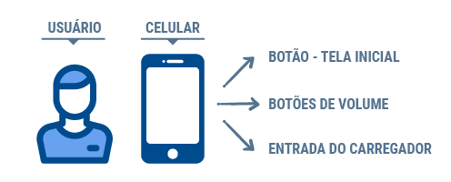
Demonstração de abstração
Fonte: Senac EAD (2022)
Na imagem, à esquerda, está o texto “Usuário” e, abaixo, a imagem do avatar de um ser humano ao lado um celular, que tem acima o texto “Celular”, e, ao lado, há três setas apontando para três retângulos, nos quais estão os textos, de baixo para cima: “Botão – Tela Inicial”, “Botões de Volume” e “Entrada do Carregador”.
Note que, como o uso do celular é rotineiro, aquelas três funções básicas são utilizadas praticamente o tempo todo. Mas a complexidade delas e o modo como elas funcionam ficam escondidos, não sendo necessário saber como são executadas para que se use o aparelho, e essa é a ideia principal da abstração.
Essa proteção de atributos e métodos mais complexos “conversam” diretamente com a importância de deixar algumas coisas mais protegidas e seguras do acesso de quaisquer usuários e isso envolve o segundo pilar da orientação a objetos: o encapsulamento.
Antes de prosseguir, treine um pouco a definição de classes e a instanciação de objetos com este jogo:
O encapsulamento é sem dúvida uma das características que definem e tornam a orientação a objetos o que ela é. É uma técnica que, de certa maneira, acrescenta segurança a uma classe pelo fato de esconder ou proteger os detalhes de atributos e métodos dos objetos dessa classe.
Encapsulamento é uma técnica que oculta detalhes internos do funcionamento de um método e evita que dados de um objeto sofram acesos indevidos. É importante que o encapsulamento entre em ação na instanciação.
Quando um objeto é instanciado de uma classe, os atributos e métodos são encapsulados dentro do objeto (lembre-se de que cada objeto é único, mesmo se algumas informações forem iguais). O encapsulamento esconde a parte interna da implementação dos códigos e esconde também as informações internas de um objeto. Mas quão importante é isso? Muito!
Para compreender melhor a utilidade e a importância dessa técnica, é preciso ter em mente que um sistema (especialmente quando for orientado a objetos) não é formado por um único bloco monolítico de código, mas sim divido em partes menores e que realizam cada qual seu trabalho de maneira independente (classes, por exemplo). Assim, é necessário que essas partes se comuniquem para realizarem tarefas completas no sistema.
Em um sistema orientado a objeto, cada parte pode ser uma classe; das classes criam-se os objetos e esses precisarão comunicar uns com os outros. Um objeto poderá ler e modificar um atributo ou chamar um método de outro objeto, por exemplo.
Sem encapsulamento, um objeto pode acessar todos os atributos, inclusive atribuindo-lhes valores, e todos os métodos de outro. Em algumas situações, porém, isso pode não ser desejável e até ser mesmo perigoso. O encapsulamento, então, permite que se bloqueie o acesso a um ou mais atributos específicos e a um ou mais métodos, mantendo o acesso livre a outros.
Pense em exemplos nos quais a segurança é importante. Em um sistema desenvolvido por você, em que o usuário pode cadastrar o seu cartão de crédito para efetuar compras, é extremamente necessário que algumas informações sejam protegidas ou privadas. Portanto, é esse nível de preocupação que você precisa ter para este tipo de característica, que é o encapsulamento.
Além de questões de segurança, reflita também sobre o que foi estudado em abstração: o usuário precisa saber e ter acesso a tudo o que acontece dentro do sistema? Não! O mesmo acontece na relação entre objetos: um objeto não precisa acessar todos os detalhes do outro. Dessa forma, o encapsulamento também entra nessa questão.
Relembrando o objeto televisão, quando o usuário aperta no controle remoto o botão de ligar, o aparelho ligará, porém não se sabe (e não é preciso saber) o que está acontecendo dentro do sistema e como isso foi programado. Só é preciso saber como pressionar o botão. Um objeto, analogamente, só precisará saber como chamar um método de outro, não como ele foi desenvolvido nem como se modificam internamente os atributos desse outro método.
Para compreender melhor o encapsulamento, considere como exemplo as cápsulas de remédio:
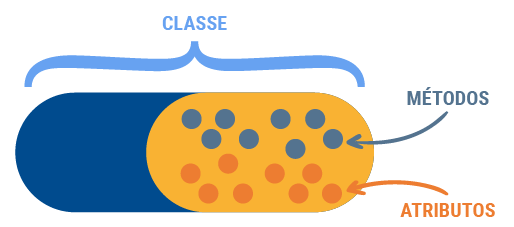
Exemplo visual do encapsulamento
Fonte: Senac EAD (2022)
Na imagem, consta uma cápsula e, dentro dela, uma capsula menor ocupando metade do espaço da primeira. Acima da capsula maior está o texto “Classe”, dentro da cápsula menor estão dezessete pequenos círculos, nove desses círculos são laranjas e apontam para uma seta com o texto “Atributos”, os outros oito círculos são cinzas e apontam para uma seta com o texto “Métodos”.
Quando se fala sobre encapsulamento, existem duas importantes palavras-chave a respeito de atributos e métodos: estes podem ser públicos ou privados. Esses aspectos fazem uma grande diferença, pois ajudam a esconder informações importantes, as quais não deverão ser acessadas ou alteradas por outros usuários ou até mesmo outros desenvolvedores.
Que tal imaginar um cenário e aplicar questões públicas e privadas ao mesmo? Em um sistema bancário, o usuário pode checar seu saldo. Nesse primeiro exemplo, o saldo será deixado como público, sem um método ou qualquer outra forma de se chegar até ele.
Demonstração de atributo público
Fonte: Senac EAD (2022)
Na imagem, à esquerda, consta a imagem do avatar de um ser humano e, ao lado, um retângulo com o texto “Saldo – Público”.
Nesse exemplo, o usuário tem o atributo saldo como público. Pense no que aconteceria se o seu saldo bancário fosse público, acessível a todos que usassem e/ou operassem o sistema. Quão caótico isso seria? O encapsulamento, portanto, não é apenas uma característica da orientação a objetos, mas também uma grande necessidade quando se trata da criação de um sistema.
Agora, será deixado de lado o atributo “saldo privado” para se utilizar um método público para acessar esse saldo.
Demonstração de método público e atributo privado
Fonte: Senac EAD (2022)
Na imagem, à esquerda, consta o avatar de um ser humano; ao lado há uma seta apontando para um retângulo com o texto “Método – Público – A função desse método é solicitar a senha do usuário” e, ao lado deste, uma seta apontando para outro retângulo com o texto “Saldo – Privado”.
A diferença do método público para o privado é que o usuário e qualquer outro do sistema apenas verá o saldo se tiver a senha. Isso porque os outros usuários teriam acesso apenas ao método, que contém toda uma verificação de segurança.
Da mesma maneira, na relação entre objetos, um objeto “conta” poderia proteger seu atributo “saldo” para que outros objetos não alterassem diretamente seu valor. Ao invés disso, poderia ser disponibilizado um método público que fizesse a alteração com segurança.
| CONTA |
|---|
| privado: Saldo |
| público: depositarValor |
| público: sacarValor |
| privado: validaSenha |
Método público
Fonte: Senac EAD (2022)
Lembre-se sempre do quanto é importante o encapsulamento até para proteção do seu próprio código, além do usuário.
Quais são os benefícios do encapsulamento e por que ele é utilizado?
Segurança
Apenas métodos públicos e atributos são acessíveis externamente à classe.
Previne erros comuns
Como apenas campos públicos e métodos são acessíveis, é uma forma de os desenvolvedores protegerem alguns dados de suas classes.
Esconde a complexidade
Ninguém pode ver o que está escondido e o quão complexo é a funcionalidade de um sistema.
Em Python, você pode definir métodos públicos e privados em uma classe usando convenções de nomenclatura. Embora Python não tenha modificadores de acesso como em algumas outras linguagens de programação, por exemplo, public, private, protected, você pode seguir convenções.
Métodos públicos são acessíveis de fora da classe e devem ser nomeados normalmente. Por convenção, eles não têm um sublinhado no início do nome.
class MinhaClasse: def metodo_publico(self):
return "Este é um método público."
#início do Programa
objeto = MinhaClasse()
print((objeto.metodo_publico())# Isso funcionará
Métodos privados não devem ser acessados diretamente fora da classe. Por convenção, eles têm um sublinhado no início do nome.
Usar um sublinhado no início de nomes de métodos para indicar privacidade é apenas uma convenção. Tecnicamente, os métodos com sublinhado no início ainda podem ser acessados de fora da classe, mas não é uma boa prática. Python confia na “convenção de privacidade” em vez de impor a restrição diretamente.
Além disso, a partir do Python 3.9, você pode usar a anotação private para fornecer um nível mais alto de proteção para membros de classe, mas isso ainda é uma convenção.
class MinhaClasse:
def __init(self):
self.__atributo_privado =42
@property
def atributo_privado(self)
return self.__atributo_privado (self)
@atributo_privado.setter
def atributo_privado(self, valor):
self.__atributo_privado = valor
objeto = MinhaClasse()
print(objeto.atributo_privado) # Isso funcionará
objeto.atributo_privado = 100 # Isso funcionará
O uso de métodos privados no Python é uma questão de convenção e boa prática, e não uma imposição rígida do Python. Portanto, é importante seguir as convenções para manter o código organizado e de fácil manutenção.
A herança é uma das características que permite que algumas classes herdem funções e características de outras. Simplificando, tem-se uma “classe pai” e as “classes filhas” estenderão os atributos e métodos da classe pai. Essa “classe pai” é tecnicamente chamada de superclasse.
Ela conterá uma definição básica e talvez até genérica de um objeto e, estendendo-a para outras, é possível tornar os objetos mais específicos e com características mais complexas que a sua classe pai. Porém, considere que não se está replicando código e sim reutilizando o código da superclasse. Isso, sem dúvida, facilita o desenvolvimento do código e também evita que ele se desorganize.
É possível usar herança sempre que houver objetos similares, mas que precisam de algumas mudanças pontuais em suas características (atributos) e ações (métodos).
Para compreender melhor a herança, considere itens eletrônicos para exemplificar:
O primeiro passo é definir a superclasse. Então, comece definindo os Itens Eletrônicos como sua “classe pai”. Depois disso, estenda algumas classes filhas para que se chegue a uma gama de heranças. Visualmente, isso ficaria mais simples da seguinte forma:
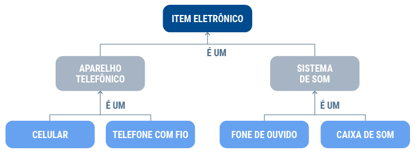
Exemplo de herança utilizando Item Eletrônico com superclasse
Fonte: Senac EAD (2022)
No topo da imagem consta um retângulo com o texto “Item Eletrônico”. Abaixo dele estão dois retângulos: o da esquerda contém o texto “Aparelho telefônico” e o da direita contém o texto “Sistema de som”. Abaixo, há quatro retângulos: da esquerda para a direita estão os textos “Celular”, “Telefone com fio”, “Fone de ouvido” e “Caixa de som”.
Note, nesse diagrama visual, a gama de classes e os objetos que podem ser criados, porém, todas essas classes estenderão a classe pai, que é o Item Eletrônico. Dito isso, fica claro que será diminuída a quantidade de códigos e também que serão gerados objetos com características diferentes, podendo-se até mesmo implementar novas funcionalidades.
Um ponto a se destacar nesse diagrama é a expressão “é um”, que ajuda na compreensão da herança e na aproximação do objeto ao mundo real como um todo. Desmembrando esse diagrama, você o entenderá da seguinte forma.
Reflita, então, quantos códigos estão sendo protegidos e quanto tempo está sendo salvo pelo fato de apenas se utilizar a herança para esse tipo de funcionalidade, que pode ser criada dentro dos sistemas.
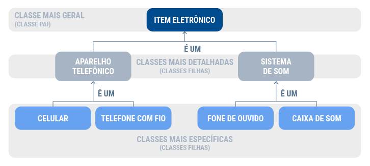
Demonstração de relacionamentos entre classe pai e classes filhas
Fonte: Senac EAD (2022)
No topo da imagem consta um retângulo com o texto “Item Eletrônico”. Abaixo dele há dois retângulos: o da esquerda com o texto “Aparelho Telefônico” e o da direita com o texto “Sistema de som”. Abaixo, há quatro retângulos, da esquerda para a direita, com os textos: “Celular”, “Telefone com fio”, “Fone de ouvido” e “Caixa de Som”. Ao lado primeiro retângulo, ao topo, está a frase “Classe mais geral (classe pai)”; abaixo, entre os dois retângulos, consta o texto “Classes mais detalhadas (classes filhas”), e entre os quatro retângulos está o texto “Classes mais específicas (classes filhas)”.
Agora será criada a superclasse, com atributos e métodos, e em seguida será abordado o seu uso nas “classes filhas”.
| Item Eletrônico |
|---|
| Ano de fabricação |
| Fabricante |
| Cor |
| Preço |
| Número de série |
| Carregar |
| Ligar |
| Desligar |
Superclasse
Fonte: Senac EAD (2022)
Com a superclasse montada, será bem simples compreender que todas as classes filhas terão estes atributos e métodos para usarem e até mesmo alterarem o seu comportamento.
Agora, serão criadas as duas primeiras classes filhas. Essas duas usarão os atributos e métodos da classe pai, porém estenderão um pouco o tamanho dessa classe.
| Aparelho telefônico |
|---|
| Modelo |
| Bateria |
| Chip |
| Efetuar ligação |
Aparelho telefônico – classe filha
Fonte: Senac EAD (2022)
| Sistema de Som |
|---|
| CD, Fita, Bluetooth? |
| Voltagem |
| Volume máximo |
| Trocar faixa |
Sistema de som – Classe filha
Fonte: Senac EAD (2022)
Agora as classes filhas estão estendidas, porém, você notou que não foi preciso declarar todos os atributos e métodos da superclasse? Isso porque tudo já está implementado nessa classe filha, o que é um dos princípios mais importantes da orientação a objetos, o reúso de código, e que é fornecido pela herança.
Confira um resumo da herança dentro da orientação a objetos:
A herança é um conceito fundamental na programação orientada a objetos (POO) e também é amplamente suportada em Python. Ela permite que você crie novas classes que herdam as características (atributos e métodos) de uma classe pai, permitindo a reutilização de código e a criação de uma hierarquia de classes. Em Python, a herança funciona da seguinte maneira.
Esta é a classe que você deseja estender ou da qual deseja herdar funcionalidades. Ela define os atributos e os métodos iniciais que serão compartilhados pelas classes filhas.
Esta é a classe que herda da classe pai. A classe filha pode adicionar novos atributos e métodos, além de modificar ou substituir os existentes, conforme necessário.
Veja um exemplo de como a herança funciona em Python.
Para começar, observe a definição da superclasse ItemEletronico:
class ItemEletronico:
def __init__(self, ano_fabricacao, fabricante, cor, preco, numero_serie):
self.ano_fabricacao = ano_fabricacao
self.fabricante = fabricante
self.cor = cor self.preco = preco
self.numero_serie = numero_serie
def carregar(self):
pass # Este método será implementado nas classes filhas
def ligar(self):
pass # Este método será implementado nas classes filhas
def desligar(self):
pass # Este método será implementado nas classes filhas
A classe ItemEletronico tem os atributos comuns a todos os dispositivos eletrônicos e três métodos: carregar, ligar e desligar, que serão implementados nas classes filhas.
Agora será criada a primeira classe filha AparelhoTelefonico:
class AparelhoTelefonico(ItemEletronico):
def __init__(self, ano_fabricacao, fabricante, cor, preco, numero_serie, modelo, bateria, chip):
super().__init__(ano_fabricacao, fabricante, cor, preco, numero_serie)
self.modelo = modelo
self.bateria = bateria
self.chip = chip
def efetuar_ligacao(self):
return f"Realizando ligação com o modelo {self.modelo}"
def carregar(self):
return f"Carregando o telefone {self.modelo}"
def desligar(self):
return f"Desligando o telefone {self.modelo}"
A classe AparelhoTelefonico herda da classe ItemEletronico e adiciona atributos específicos a um aparelho telefônico, como modelo, bateria e chip. Ela também implementa os métodos carregar, ligar e desligar e adiciona um método próprio, o efetuar_ligacao.
Dando continuidade, será criada a segunda classe filha: SistemaDeSom:
class SistemaDeSom(ItemEletronico):
def __init__(self, ano_fabricacao, fabricante, cor, preco, numero_serie, tipo_aparelho, voltagem, volume_maximo):
super().__init__(ano_fabricacao, fabricante, cor, preco, numero_serie)
self.tipo_aparelho = tipo_aparelho
self.voltagem = voltagem
self.volume_maximo = volume_maximo
def trocar_faixa(self):
return "Trocando de faixa de música"
def carregar(self):
return f"Carregando o sistema de som do tipo {self.tipo_aparelho}"
def ligar(self):
return f"Ligando o sistema de som do tipo {self.tipo_aparelho}"
def desligar(self):
return f"Desligando o sistema de som do tipo {self.tipo_aparelho}"
A classe SistemaDeSom também herda da classe ItemEletronico e adiciona atributos específicos a um sistema de som, como tipo_aparelho, voltagem e volume_maximo. Ela implementa os métodos carregar, ligar e desligar e adiciona um método próprio: trocar_faixa.
Dessa forma, você tem uma hierarquia de classes com uma superclasse ItemEletronico e duas subclasses: AparelhoTelefonico e SistemaDeSom, que herdam atributos e métodos comuns da superclasse e implementam métodos específicos para seus tipos de dispositivo eletrônico.
No exemplo mostrado, as classes filhas eram o Aparelho telefônico e o Sistema de som, porém, neste desafio, você deverá criar as tabelas com os atributos e métodos para as outras filhas. Neste caso, serão quatro tabelas: “Celular”, “Telefone com fio”, “Fone de ouvido” e “Caixa de som”. Pense no que será diferente para cada uma, a fim de poder utilizar a herança ao máximo.
Esse pilar é sem dúvida um dos mais divertidos e que mais protegem o sistema, para que este não apresente longas linhas de código que replicam diversos comportamentos. Mas, comece seu estudo pelo começo.
Polimorfismo vem do grego poli = muitas, morphos = forma, logo, pode-se entender esse conceito como tendo-se objetos que assumirão diversas formas. Complexo, não é mesmo? Mas é preciso tentar tornar isso um pouco mais simples, já que o polimorfismo, assim como os outros três pilares trabalhados, é, sem dúvida, um dos grandes sustentadores da orientação a objetos.
Para esclarecer alguns pontos, polimorfismo é a capacidade de um objeto poder ser referenciado de várias formas. Mas cuidado, o polimorfismo não quer dizer que o objeto fica se transformando, como na herança. Muito pelo contrário, um objeto nasce de um tipo e “morre” exatamente do mesmo, o que muda no polimorfismo é como o programador referencia um objeto nele.
O polimorfismo é uma consequência da herança.
Entenda melhor essa conceituação com um exemplo visual e simples.
Considere a classe Personagem como uma superclasse. Ela será criada de modo bem simples, sem atributos e somente com um método.
| Personagem |
|---|
| Atacar |
Classe personagem
Fonte: Senac EAD (2022)
Até aqui, tudo certo. Agora, serão criadas três classes filhas que também terão o método Atacar, começando-se a trabalhar a complexidade do polimorfismo.
| Guerreiro |
|---|
| Atacar |
| Mago |
|---|
| Atacar |
| Arqueiro |
|---|
| Atacar |
Classes filhas da superclasse Personagem
Fonte: Senac EAD (2022)
Até este momento, a construção está bem simples. Porém, no polimorfismo, existe um processo básico e muito importante chamado sobrescrita de métodos. Suponha que, na superclasse Personagem, o método Atacar retorne apenas a mensagem “Você atacou”. Porém, como há três classes filhas que também têm o método “Atacar”, por que retornaria uma mensagem tão simples? Não é o que se quer neste momento. Então, graças ao polimorfismo, utiliza-se a sobrescrita para retornar mensagens diferentes a cada uma das classes. Os exemplos mostram o que se quer:
A dica para entender o polimorfismo é saber que há o mesmo método, mas com implementações diferentes, isto é, há comportamentos diferentes para um mesmo método. O retorno de valores e/ou de mensagens diferentes depende da classe que está sendo utilizada e, nesse exemplo, todas são herdadas da classe Personagem, pois não se esqueça de que Guerreiro, Mago e Arqueiro são personagens.
Um dos benefícios do polimorfismo é a abstração sobre o tipo concreto do objeto a ser utilizado, ou seja, é possível invocar o método descrito na superclasse sem precisar considerar se o objeto é de fato da superclasse ou de uma classe derivada. Por exemplo, seria possível ter um objeto do tipo “Personagem” e invocar o método Atacar a ele; como Guerreiro é derivado de Personagem, seria viável atribuir a esse objeto uma instância de Guerreiro e, ao invocar Atacar, ter o resultado “Você atacou com a sua espada”. Em seguida, pode-se atribuir ao mesmo objeto uma instância de Arqueiro e a mesma chamada a Atacar resultaria em “Você disparou uma flecha”. Do mesmo modo aconteceria com Mago.
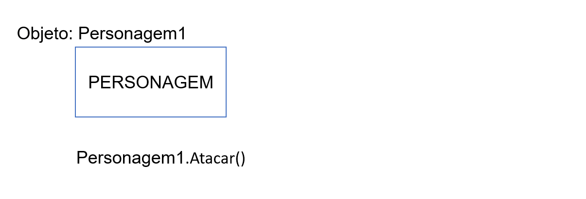O gif inicia com um quadro escrito “Personagem” e sobre ele o rótulo “Objeto: Peronsagem1”. Abaixo, o texto “Personagem1.Atacar()” cintila, mostrando o resultado “Você atacou”. Em seguida, surge à direita do quadro um retângulo colorido com o nome “GUERREIRO”, que se move até o interior do quadro “PERSONAGEM”. “Personagem. Atacar()” cintila de novo e mostra o resultado “Você atacou com a espada”. Apaga-se o quadro “GUERREIRO”. Em seguida, surge à direita do quadro um retângulo colorido com o nome “ARQUEIRO”, que se move até o interior do quadro “PERSONAGEM”. “Personagem. Atacar()” cintila de novo e mostra o resultado “Você disparou uma flecha”. Apaga-se o quadro “ARQUEIRO”. Em seguida, surge à direita do quadro um retângulo colorido com o nome “MAGO”, que se move até o interior do quadro “PERSONAGEM”. “Personagem. Atacar()” cintila de novo e mostra o resultado “Você lançou uma bola de fogo”.
O objeto recebe diferentes instâncias de classes derivadas. A cada instância, o mesmo método Atacar é invocado, mostrando a resposta de acordo com a implementação da classe derivada.
Estendendo esse uso, seria possível ter uma lista inteira de “Personagens”, em que cada item fosse uma instância de uma das classes derivadas. Você poderia invocar o método Atacar para cada item da lista, sem se preocupar se se trata de um Mago, Guerreiro ou Arqueiro, e o método responderia adequadamente segundo a implementação da classe derivada.
Python usando uma superclasse Personagem simples com um método atacar.
Primeiramente, a definição da superclasse Personagem:
class Personagem
def Atacar(self)
pass# Este método será sobrescrito nas classes filhas
Aqui, a classe Personagem tem apenas um método chamado Atacar. No entanto, ele não faz nada (passa). Isso é intencional, pois o método será sobrescrito nas classes filhas.
Agora serão criadas três classes filhas que herdam de Personagem e sobrescrevem o método atacar.
Classe Guerreiro:
class Guerreiro(Personagem)
def Atacar(self)
return "O guerreiro ataca com sua espada."
Classe Mago:
class Mago(Personagem)
def Atacar(self)
return "O mago lança um feitiço mágico."
Classe Arqueiro:
class Arqueiro(Personagem)
def Atacar(self)
return "O arqueiro dispara uma flecha precisa."
Dessa forma, há três classes filhas, Guerreiro, Mago e Arqueiro, que herdam da classe Personagem e sobrescrevem o método Atacar com comportamento específico para cada tipo de personagem.
A seguir, veja um modelo de como você pode usar o polimorfismo para criar instâncias de diferentes tipos de personagem e chamar o método Atacar.
guerreiro = Guerreiro()
mago = Mago()
arqueiro = Arqueiro()
arqueiro = Arqueiro()
personagens = [guerreiro, mago, arqueiro]
for personagem in personagens:
print (personagem.Atacar())
Nesse exemplo, foi criada uma lista de personagens com instâncias de Guerreiro, Mago e Arqueiro. Em seguida, foi iterado pela lista e chamado o método atacar para cada personagem. Como cada classe filha sobrescreve o método atacar, o resultado será específico para o tipo de personagem.
Agora você já deve ter compreendido os conceitos mais importantes relacionados à orientação a objetos, desvendou as diferenças da linguagem estruturada, conceituou classes e objetos e ingressou nos importantes pilares da orientação a objetos. Com isso tudo, porém, o grau de complexidade de programação aumentou, mas certamente, com todas essas novas características que serão implementadas por você, será mais fácil criar sistemas mais seguros, robustos e também com uma gama muito maior de possibilidades.
Um resumo das características da orientação a objetos, de acordo com o que foi estudado até este momento, seria da seguinte forma:
O encapsulamento facilita a identificação de problemas.
Quando você estiver programando diretamente com a orientação a objetos, certamente encontrará bugs e erros em código, porém, diferentemente da linguagem estruturada, será possível determinar que algum objeto não está funcionando, possibilitando ir direto à classe, sem ter que passar por todas as linhas de código.
O encapsulamento proporciona maior segurança.
Sem dúvidas, ainda com referência ao tópico sobre encapsulamento, você estará sempre filtrando informações que não serão expostas para o usuário e provendo a eles somente o que precisam.
É possível reutilizar códigos por meio da herança.
Como estudado, a herança é uma excelente técnica para evitar a repetição de códigos por meio de uma simples superclasse, independentemente do sistema a que você será alocado para construir. A herança poupará tempo de desenvolvimento e tornará seu sistema muito mais simples e leve para os usuários.
O polimorfismo torna o código mais flexível.
O fato de um simples método poder retornar valores/mensagens diferentes dentro de outras classes ou mesmo a criação de outros objetos simplesmente “salva a vida” (espaço e tempo também) de um desenvolvedor. Então, sempre fique atento quanto aos momentos em que as sobrescritas podem ser usadas para facilitar a sua estrutura.
É importante também sinalizar que a orientação a objetos é algo que o mercado de trabalho trata com grande importância e sendo de grande necessidade. A maioria das linguagens que são exigidas pelo mercado de trabalho (Java, C++, C# etc.) no século XXI traz a necessidade da orientação a objetos como um máximo no seu dia a dia. Mesmo que as empresas e vagas não solicitem explicitamente o conhecimento da orientação a objetos, sem dúvida as linguagens atualmente são dessa forma. Portanto, refletir e compreender esses conceitos fará de você um grande desenvolvedor.
Quando se começa a estudar programação orientada a objetos, percebe-se que cada uma das classes começa a ter um comportamento individual e até mesmo “conversar” de uma maneira ou de outra umas com as outras. Esse conceito não é apenas importante para se manter uma organização das ideias, mas também é de suma importância ter isso expressado de modo visual e, claro, dentro dos padrões mais conhecidos do mundo, o padrão UML.
Afinal, o que é UML?
A área de desenvolvimento, assim como a informática como um todo, não é tão antiga. Sendo assim, ela teve que evoluir e se adaptar muito rápido às necessidades mercadológicas e de organização. A UML (Unified Modeling Language) surgiu para suprir essa necessidade e padronizar uma indústria que esteja recém iniciando suas atividades.
O seu desenvolvimento data entre 1994 e 1995, quando Grady Booch, Ivar Jacobson e James Rumbaugh trabalhavam na mesma empresa e apresentaram essa ideia para a OMG (Object Management Group), uma organização internacional que aprova padrões abertos para softwares, sistemas e aplicações orientadas a objetos. A ideia foi prontamente aprovada em 1997, além disso, desde 2005, a ISO (International Organization Standardization) aprovou a UML como um padrão mundialmente utilizado.
Criadores da UML
Legenda: a) Grady Booch; b) Ivar Jacobson; c) James Rumbaugh
Fonte: a) Wikipédia (2020); b) Jacobson (2009); c) EduRed (2018)
A imagem mostra três fotografias dos cientistas Grady Booch, Ivar Jacobson e James Rumbaugh.
A UML não é uma linguagem de programação, e sim uma forma de melhorar e exibir mais detalhadamente a abstração de um sistema, as suas classes e os objetos que poderão vir a ser gerados.
Imagine que a UML servirá como se fosse um guia visual para os desenvolvedores dos sistemas; uma planta baixa de um sistema, na qual, por tabelas, setas e linhas, estão definidas quais classes precisarão ser desenvolvidas e como elas “conversarão” entre si.
Desde o conteúdo sobre lógica, abordou-se sobre abstração e como traduzir os algoritmos. Agora, em orientação a objetos, traz-se a ideia de aproximar esses algoritmos do mundo real. Com a UML, essa aproximação poderá se tornar um pouco mais visual, facilitando até o processo de abstração, sendo trazido para dentro de um sistema e compartilhado com a equipe.
É importante lembrar que a UML tem como base a orientação a objetos e, por meio de símbolos e diagramas, forma essa “planta baixa” do sistema.
Por que a UML é necessária?
Uma das questões que você deve considerar com relação à UML é que existem diversos tipos de diagramas que permeiam essa tecnologia. A UML é extremamente detalhada e, antes mesmo de se tocar em uma linha de código, você poderá passar dias apenas desenhando e planejando esses diagramas.
Veja alguns exemplos:
Diagrama de classes
Representam as classes de um sistema, com seus atributos, métodos e até mesmo relacionamentos entre elas, que são essenciais para o conteúdo de orientação a objetos.
Diagrama de casos de uso
Apresenta de modo mais visual como os usuários interagirão com certas funcionalidades do sistema.
Diagrama de componentes
É um tipo de diagrama usado para apresentar a arquitetura do software como um todo e como cada componente do sistema se comunicará com o usuário final.
Esses são apenas três entre vários outros diagramas que compõem essa tecnologia de UML e que “conversam” diretamente com todo o processo de desenvolvimento e concepção de um sistema. Lembre-se de que a UML é uma parte essencial do ciclo de vida do software e de que uma documentação aliada a diagramas bem desenhados pode poupar trabalho e tempo não só seu, mas de todas as pessoas envolvidas no projeto.
Os diagramas de classe serão um dos melhores suportes não apenas para a visualização do seu programa, pois eles também servirão para descrever e documentar os diferentes aspectos do sistema, além de gerarem uma ideia geral de todo o trabalho que será desenvolvido.
Esses diagramas mostrarão as classes, com seus atributos e métodos, e também trarão os encapsulamentos e as heranças entre as classes.
As características que devem ser consideradas são:
Como desenhar esses diagramas? O que deve conter dentro dessas tabelas? Isso será relativamente simples, cada uma das classes terá apenas três elementos:
| Nome da classe |
| Atributos |
| Métodos |
Diagrama
Fonte: Senac EAD (2022)
Porém, existem alguns padrões e boas práticas que devem ser seguidos para que os diagramas estejam de acordo não só com os próprios padrões de UMLs, mas também com o que o mercado de trabalho exige.
Aqui será colocado o nome da classe. Você já conhece as definições do que é uma classe, porém, para escrever o nome dessa classe em um diagrama de classe, é preciso atentar-se ao seguinte:
É onde são colocados os atributos junto a sua visibilidade e seu tipo de dado.
Aqui é finalizado o diagrama de classe com os métodos, assim como sua visibilidade e seu retorno. Lembre-se de que o retorno é bem similar às sub-rotinas do Portugol.
Embora sejam muitas informações e pareça complexo, na prática é muito mais simples. Confira um exemplo visual utilizando a classe Aluno, montada anteriormente:
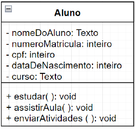
Exemplo de diagrama da classe Aluno
Fonte: Diagramas.net (s.d.)
Na imagem consta uma tabela com uma coluna e nove linhas. Na primeira linha está a palavra “Aluno” e, abaixo, constam os seguintes textos em ordem: “nomeDoAluno: Texto”, “númeroMatricula: inteiro”, “cpf: inteiro”, “dataDeNascimento: inteiro”, “curso: Texto”, “estudar( ): void”, “assistirAula( ): void” e “enviarAtividades( ): void”.
Possivelmente, o exemplo visual facilitou a compreensão. Note que estão ali as três sessões dentro dos seus padrões. Uma estrutura bem montada ajuda a todos que estão envolvidos no projeto para que tenham facilidade em interpretar e posteriormente desenvolver esses diagramas via código.
Mas como será quando houver mais classes? Nesse momento é que a UML e os diagramas de classe realmente começam a agir e mostrar como as classes podem estar ligadas entre si e como funcionariam, facilitando a documentação e interpretação.
Que tal agora criar as classes Aluno, Professor e Faculdade?
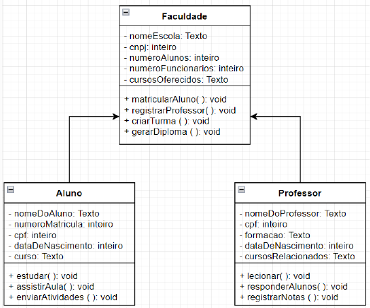
Exemplo de múltiplas classes e seus relacionamentos utilizando diagramas
Fonte: Diagramas.net (s.d.)
Na imagem constam três tabelas, cada uma com uma coluna e nove linhas. Na primeira tabela está a palavra “Aluno”, no topo. Abaixo estão os seguintes textos, em ordem: “nomeDoAluno: Texto”, “numeroMatricula: inteiro”, “cpf: inteiro”, “dataDeNascimento: inteiro”, “curso: Texto”, “estudar( ): void”, “assistirAula( ): void” e “enviarAtividades( ): void”. Na segunda tabela consta a palavra “Professor”, no topo. Abaixo estão os seguintes textos, em ordem: “nomeDoProfessor: Texto”, “cpf: inteiro”, “formacao: inteiro”, “dataDeNascimento: inteiro”, “cursosRelacionados: Texto”, “lecionar( ): void”, “responderAlunos( ): void” e “registrarNotas( ): void”. Na terceira tabela, acima das duas primeiras, consta a palavra “Faculdade”, no topo. Abaixo estão os seguintes textos, em ordem: “NomeEscola: Texto”, “cnpj: inteiro”, “numeroAlunos: inteiro”, “numeroFuncionarios: inteiro”, “cursosOferecidos: Texto”, “matricularAluno( ): void”, “registrarProfessor( ): void” e “criarTurma( ): void” e “gerarDiploma( ): void”.
Nesse exemplo fica mais fácil observar como as classes “conversam” entre si e também uma estrutura maior de como isso pode formar um sistema. É claro que, durante o desenvolvimento de uma aplicação, a estrutura dos diagramas de classe e seus relacionamentos, tais como as heranças, serão importantes para a compreensão do funcionamento do software, além disso, essa estrutura é extremamente visual até mesmo para os clientes que contratarão seus serviços, o que pode ajudá-los a entenderem como está o andamento do projeto.
Obviamente, criar os diagramas de classe seria mais fácil com o uso de um software ou aplicativo. Então, será utilizado o aplicativo Diagrams, que é simples e fácil de usar para construir os diagramas de classe.
Importante! O aplicativo Diagrams é de uso gratuito e livre. Além do uso para UML, ele também oferece uma gama de outras formas e também a criação de fluxogramas. Fique à vontade para explorar a ferramenta.
1. Para acessar o aplicativo, clique neste link https://app.diagrams.net. Realize os passos a seguir para utilizar a ferramenta.
2. Depois de entrar no aplicativo, você verá este pequeno pop-up:
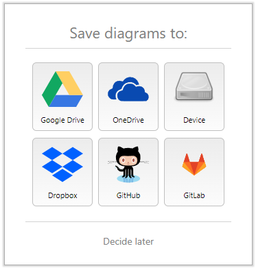
Pop-up de entrada do Diagrams
Fonte: Diagrams.net (s.d.)
A imagem mostra um quadrado com uma tabela de três colunas e duas linhas. Na primeira linha está o ícone do Google Drive; ao lado deste, o ícone do 11Drive e, ao lado, o ícone de um dispositivo de armazenamento. Na linha de baixo, consta o ícone do Dropbox; ao lado, o ícone do GitHub e, ao lado, o ícone do GitLab.
Essa tela é muito importante, pois é nela que você decidirá onde seus diagramas ficarão salvos. Você pode escolher qualquer uma das opções para salvar em nuvem ou, se preferir, pode clicar na opção Decide later para continuar o uso direto da ferramenta e realizar o salvamento dos arquivos manualmente. Todas essas opções anteriores estarão disponíveis novamente.
3. Conheça agora algumas funções básicas de edição da área de trabalho do Diagrams, como cor de fundo, cor do grid e algumas funções que ajudarão você a usar e compreender o aplicativo.
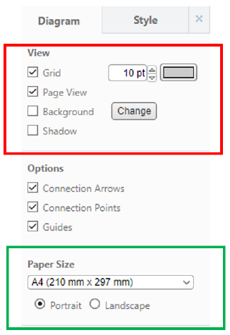
Demonstrativo de opções de cores e tamanho no Diagrams
Fonte: Diagrams.net (s.d.)
Na imagem constam dois destaques: o primeiro engloba o texto “View”. Abaixo dele há uma caixa de seleção, ao lado dela está o texto “Grid”, um texto com o valor numérico de “10pt” e um quadrado seletor de cores. Abaixo uma caixa de seleção com o texto “Page View”. Abaixo disso está uma caixa de seleção com o texto “Background” e, ao lado, o botão com o texto “Change”. Abaixo, há uma caixa de seleção com o texto “Shadow”. No segundo destaque está o texto “Paper Size”; abaixo dele consta uma caixa de opções com a opção marcada “A4 (210 mm x 297 mm)”; abaixo há duas opções com o texto “Portrait” que está marcada e, ao lado, a opção com o texto “Landscape”.
Nessa imagem existem algumas opções que são relevantes quanto à personalização do aplicativo Diagrams, as quais podem alterar as cores, o tamanho da folha e orientação do documento.
São as grades do documento. Essa opção pode ser desmarcada para que as grades fiquem ocultas ou para que se possa ajustar o tamanho e cor delas.
Enquanto você está desenvolvendo diagramas, o aplicativo, automaticamente, estará indicando a quantidade de páginas que estão sendo ocupadas. Caso você gere um arquivo (impresso ou em PDF), já saberá quantas páginas ele conterá. Essa opção pode ser desativada, se necessário.
A cor de fundo padrão do Diagrams é branco, porém, caso haja a necessidade, pode-se trocar a cor desse fundo a qualquer momento.
Aplica um efeito de sombra nos diagramas.
Refere-se ao tamanho do papel ou do documento que será gerado desse diagrama, caso seja exportado para o formato de PDF, por exemplo. O padrão A4 é utilizado em todos os documentos, porém pode ser trocado a qualquer momento, assim como a orientação da folha pode ser ajustada para Portrait (retrato) ou Landscape (paisagem).
Observe agora como isso se comporta no aplicativo Diagrams:
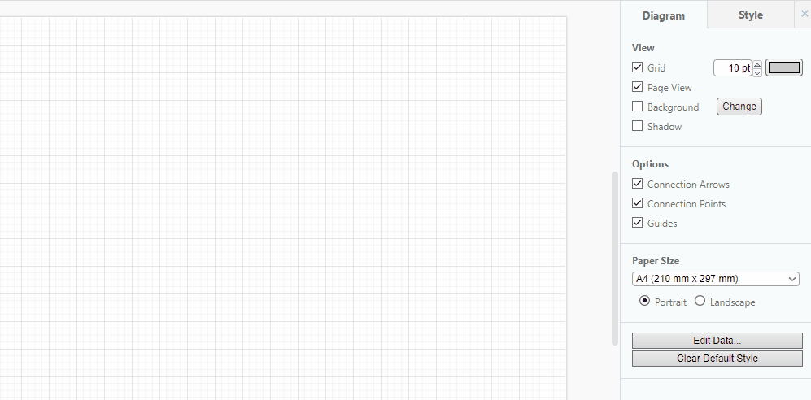Com isso, você já será capaz de gerar um processo mais personalizado.
Agora você encontrará onde poderá produzir os seus diagramas de classe e entenderá um pouco a produção desses diagramas dentro do Diagrams.
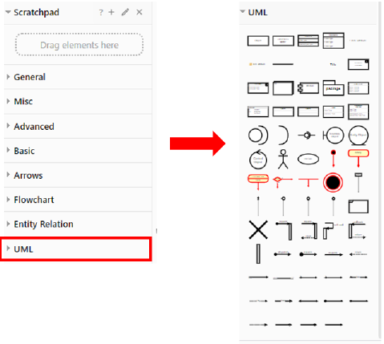
Demonstração de onde encontrar a opção de UML no aplicativo Diagrams
Fonte: Diagrams.net (s.d.)
Na figura constam duas imagens. À esquerda há um menu vertical com um destaque para o último item do menu, com o texto “UML”; ao lado há diversos ícones retangulares e redondos.
No Diagrams, no canto esquerdo, haverá os menus para acessar as opções sobre diagramas, fluxogramas e formas que a aplicação oferece. Contudo, como marcado na imagem, ao clicar em UML, você terá as opções que quiser para produzir seus diagramas de classe. O ícone que será utilizado neste momento é o terceiro da primeira linha. Ao clicar nele, surgirá o seguinte resultado:
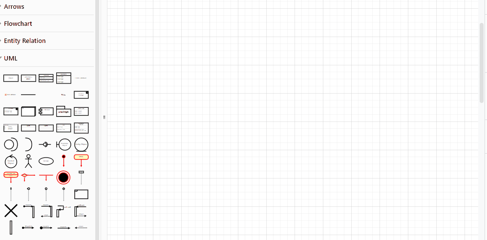Pronto! Agora, basta começar a digitar o nome da classe, os atributos e os métodos. Confira o quanto é simples esse processo:
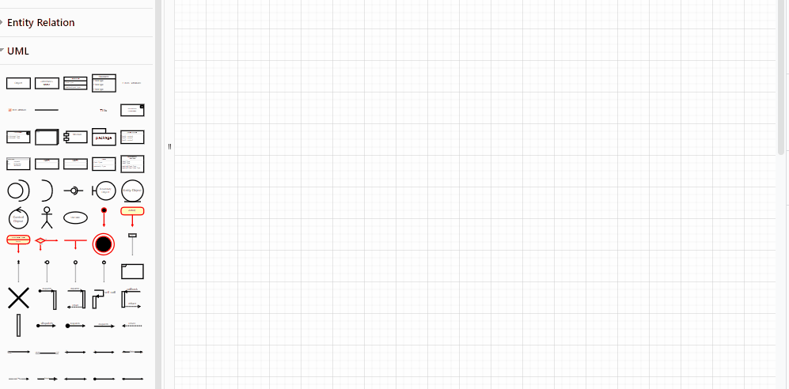Com isso, basta ampliar seu uso do aplicativo Diagrams e começar a produzir seus próprios diagramas de classe. Para finalizar, basta salvar esses diagramas. Como visto anteriormente, é possível salvá-los de diversas formas, seja em nuvem ou localmente, no seu dispositivo. Veja a demonstração de como salvar no aplicativo Diagrams.
Você foi contratado para desenvolver um simples controle de estoque para uma rede de supermercados. O solicitante trouxe para vocês as seguintes necessidades desse sistema:
Crie no Diagrams as seguintes classes: Cliente, Mercado, Estoque e Produto. Decida os atributos e métodos de cada classe e pratique o uso do Diagrams.
A importância da orientação a objetos, conforme destacado neste conteúdo, é fundamental. Além disso, é extremamente relevante considerar o quanto a UML (Unified Modeling Language) e os diagramas de classe complementam e expandem o entendimento do desenvolvimento de software como um todo. Esse processo de visualização, documentação e exibição das classes e do escopo do sistema torna o desenvolvimento significativamente mais simples desde o início.
Sempre que você iniciar um projeto, independentemente de seu tamanho, aplique esse conhecimento desde sua concepção. Isso facilitará consideravelmente a sua evolução como futuro desenvolvedor de sistemas simplesmente pelo ato de pensar, analisar e desenvolver diagramas antes mesmo de programar a primeira linha de código.